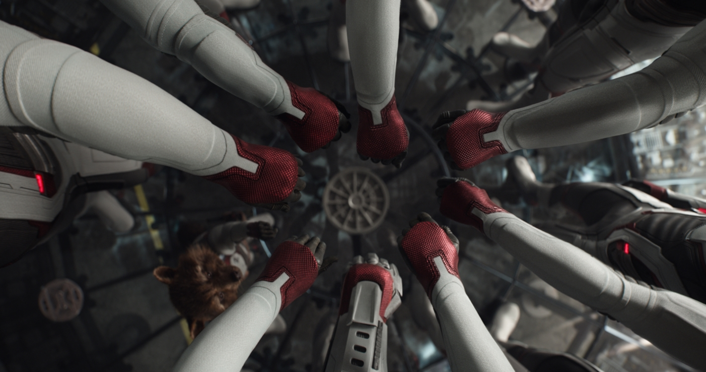

Месники: Завершення (2019)
Історія
Кожна історія має своє завершення – попереду епічний фінал найвеличнішої історії у Всесвіті Marvel. Чи зможуть Месники зупинити Таноса, зважаючи на великі втрати у своїх рядах? І чи вдасться вціліти людству у цьому масштабному протистоянні.
Фантастичний бойовик «Месники: Завершення» – це продовження фільму «Месники: Війна нескінченності» і 22 за рахунком фільм Кінематографічного всесвіту Marvel. Про майбутній фільм та дату його релізу було оголошено ще у 2014 році. Роком пізніше стало відомо, що режисурою третьої та четвертої частин Месників займуться Ентоні та Джо Руссо. Написання сценарію довірили Крістоферу Маркусу та Стівену Макфілі. У парі вони створили мультсеріал «Агент Картер» та написали сценарії до 11 стрічок, 5 із яких відносяться до кіновсесвіту Marvel. Продюсер стрічок Marvel Кевін Фейгі заявив, що спершу планувалося знімати обидва фільми про Месників одночасно – це зменшило б затрати на організацію процесу. Такої ж думки був і режисер Ентоні Руссо, проте згодом зупинилися на тому, що фільми зніматимуться один за одним. Безпосередньо до зйомок бойовика приступили одразу після зйомок попередньої частини фільму – у серпні 2017 року. Робота тривала по січень 2018 року та проходила у Атланті, штат Джорджія. Серед акторського складу вказані і ті персонажі, які загинули у першій частині фільму, проте ніхто з них не показаний у трейлерах та тізерах фільму.